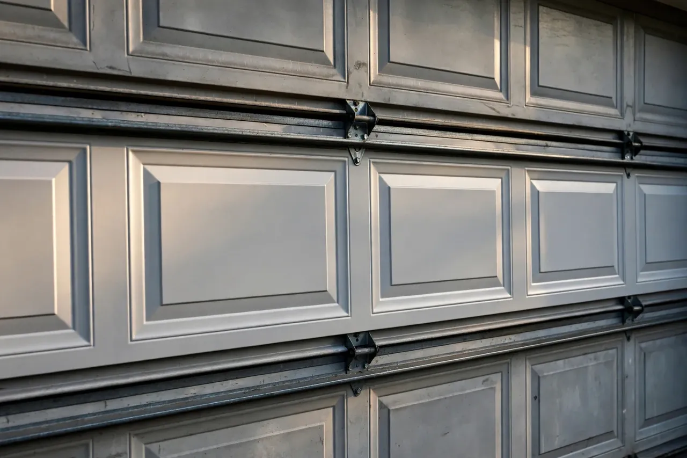

Garage Door Installation & Replacement
Garage Door Installation & Replacement in Zion, IL
A new garage door is a whole-door decision: the material, the style, the insulation, the windows, and the opener that will run it. This page walks through those choices in general terms, explains what R-value means for a garage in northern Illinois, and sets out how replacement differs from repairing one section. Milwaukee Garage Doors Inc is open 24 hours, every day, at (224) 842-7761.
Service overview
Garage Door Installation and Replacement in Zion, IL
Garage door installation and garage door replacement describe the same job in most cases: a new door is fitted and the old door is removed. This page treats them as one decision, because the questions are the same either way: which material, which style, how much insulation, whether to add windows, and whether the existing opener stays or goes. Most new residential doors are sectional: hinged panels that travel up vertical tracks and back along horizontal tracks, counterbalanced by springs and usually run by an opener.
The choices on this page are described in general terms, as options to consider and questions to ask, not as a list of products this business carries. No brand names appear on this site, and no product line is claimed. Zion's housing mix shapes the decision: older, narrower openings are a possibility on early-1900s lots in South Central Zion, while the 1990s and 2000s subdivisions of Sunset Ridge and Stonebridge Crossing are attached and garage-forward in pattern, and the gravel-alley detached garages of Kedron Park raise their own access and sizing questions. Measure the opening before assuming a standard size fits.

Insulation, in guide terms
Insulated Garage Doors and R-Value in Zion, IL
Insulation is the choice most tied to how the garage is used. The points below stay at guide level: what the terms mean, what to weigh, and what to ask. No product line or R-value target is claimed for any particular door.
What R-value means
R-value measures resistance to heat flow: a higher number means more insulation. Guides describe insulated doors with R-values well above non-insulated doors, and non-insulated doors near zero, but the right value for a given garage depends on whether the garage is attached, whether living space sits above or beside it, and whether the space is heated. Ask how a door's rating was measured before comparing numbers.
Single, double, and triple layers
Doors are built in single-layer, double-layer, and triple-layer constructions. A single layer is one skin of material. Double and triple layers add insulation and backing, which guides link to a quieter, stiffer door as well as to insulation. Layer count and insulation type are separate choices: ask which insulation a layered door actually contains.
Polystyrene and polyurethane
The two insulation materials guides name most often are polystyrene and polyurethane. Guides describe polyurethane as denser, with a higher R-value and more sound and vibration reduction, and polystyrene as the lower-cost, lower-R-value option. Either way, guides add the same caveat: insulating the door alone helps most when the garage walls and ceiling are insulated and the door is sealed around its edges.
Attached, detached, and heated garages
Guides treat the garage itself as the deciding factor. An attached garage with living space above or beside it is the usual case for an insulated door. A detached garage used only for storage is the usual case where a single-layer door is considered sensible. A heated or converted space is a different decision again, and one to discuss before choosing.
What a Visit Typically Involves, in General Terms
How an Installation Visit Works, Step by Step
Five steps, in order, from measuring to testing. The choices are made before the fitting starts, and the safety tests come last. That sequence is general-guide language: the exact sequence for any visit is not asserted here as this business's sequence, and the contents of a visit are established on the call.
STEP 01
Measure and discuss
The opening is measured, the existing door, springs, tracks, and opener are looked at, and the choices are discussed: material, style, insulation, windows, finish, and whether the opener stays. Standard sizes are a starting point only; the opening itself decides what fits.
Materials and styles
Garage Door Materials and Styles: A Chooser
Steel
The default material in northern Illinois guides, including insulated steel and steel with a composite overlay. Steel and aluminium are described as the least expensive material families in national guides, and insulated steel pairs the material with the insulation choice. Consider gauge, layer count, and finish together.
Wood and wood-look
Real wood, including cedar and mahogany in general guides, is an option with upkeep framing: refinishing and weight are the considerations guides name. Wood-look steel and composite overlays imitate wood grain without being wood. The two are different choices, not interchangeable names for one door.
Aluminum and glass
Aluminum frames with glass panels make the full-view door: clear, frosted, or tinted glass in an aluminum frame, with daylight as the point. Guides note the tradeoff honestly: a full-view door insulates less than an insulated steel door. Consider privacy, daylight, and insulation together.
Vinyl, fiberglass, and composite
Vinyl, fiberglass, and composite overlays appear in northern Illinois material lists, with thinner evidence than steel, wood, and aluminum. Treat them as questions to ask about, not as assumed options, and ask what each means for weight, upkeep, and insulation before deciding.
Raised panel and long panel
The traditional patterns: raised-panel and long-panel doors are the most common style language in guides. Panel pattern is a visual choice that also affects how windows and decorative hardware sit on the door. It says nothing by itself about insulation or material.
Carriage house
Carriage-house doors imitate swing-out carriage doors with windows and decorative hardware, but they are sectional doors that open overhead like any other. Guides stress that point, because the look suggests otherwise. Consider the hardware and window row as part of the style, not as add-ons chosen separately.
Modern, flush, and full-view
Smooth faces, clean lines, horizontal lines, or a full-width glass band define the modern and flush styles. The full-view glass door is the extreme of the same idea. Modern styles pair most often with aluminum and glass construction, and the insulation tradeoff in the aluminum card applies.
Single-layer, double-layer, triple-layer
Construction, not material: how many layers the door has, and what sits between them. Single-layer doors are one skin. Double and triple layers add insulation and backing. Ask what insulation a layered door contains before comparing it with another door.
Single doors and double doors
Single-car doors and double-car doors are different sizes and different weights, and two single doors mean two sets of springs, tracks, and opener hardware to fit and maintain, where one double door means one set. Whether to fit one double door or two singles is a chooser question: consider opening size, weight, and what happens when one door is out of use.
Sectional, and what roll-up means
The standard residential door is sectional: hinged panels on tracks. In everyday American usage, roll-up often means the same sectional door, but a rolling-steel coiling door is a different mechanism, mainly for storage and warehouse use. Use sectional as the precise term, and clarify roll-up whenever it appears.

Windows and finishes
Windows, Top Sections, and Finishes
Windows and top-row lites
Windows sit most often in the top section of the door, as a row of lites: divided-lite, plain, or vertical layouts are the options guides name. Windows add daylight to the garage and change the door's look from the street. Consider privacy glass, such as frosted or tinted panes, where the garage faces the street, and remember that glass insulates differently from a solid panel.
Window layouts and style
Window layout is part of style, not a separate decision. A carriage-house door typically carries a window row with decorative hardware. A modern door may carry a full-width glass band instead. A traditional raised-panel door may carry no windows at all. Choose the layout with the style, not after it.
Finishes and colors
Finishes include painted, stained, and factory-applied coatings, and colors range from white and neutral tones to darker modern shades. Guides discuss finish durability in terms of sun, weather, and upkeep: a finish that needs recoating is a maintenance commitment, not just a color choice. Ask what upkeep a finish needs before choosing it.
Decorative hardware and details
Handles, hinges, and decorative straps are the details that sell a carriage-house look, and they are fitted to the door's face rather than doing structural work. Consider them with the style and finish, and ask how they are fixed and whether they need upkeep of their own. Details chosen separately from the style often look added on.
Local execution
How Installation Runs Across Zion
The right new door depends on the opening, the garage, and the house around it. The cards below describe the patterns found in Zion's housing research, so the choices on this page can be weighed against the area the door will serve.
Central Zion: older openings, detached garages
Alley-loaded detached garages on some of the city's oldest lots, with the possibility of narrower or non-standard openings. Measuring matters more than assuming a standard size. See garage doors in Central Zion, IL.
South Central Zion: early-1900s houses
The oldest housing stock in the city, with National-style houses from 1900 to 1920 among its stock. Opening size, framing condition, and whether the garage is detached all shape the fitting. See garage doors in South Central Zion, IL.
Kedron Park: detached garages on gravel alleys
Detached garages and carports along gravel back alleys, with a 1990s garage-forward pocket at the north end. Access for fitting, threshold grading, and the power supply to a detached garage are part of the planning. See garage doors in Kedron Park, IL.
Beulah Park: larger lots, ranch and split-level
The largest lots among the grid groupings, with 1960s ranch and split-level homes and a mix of attached and detached garages. Lot size and garage placement shape access for fitting and the questions asked about the existing door. See garage doors in Beulah Park, IL.
Joanna and Hermon: split-level and larger-lot grid
Split-level and raised-ranch designs (tuck-under garages in Joanna) with front-facing attached garages, and larger, less-developed lots toward the western grid edge. Headroom in a tuck-under garage and the door's height are fitting questions. See garage doors in Joanna, IL and garage doors in Hermon, IL.
West Zion: garage-forward subdivisions
The western sector's subdivisions are attached and garage-forward, where the door is a large part of the home's street-facing wall and style choices show. Insulation and opener questions come up alongside style, because the garage is attached to the house. See garage doors in West Zion, IL.
Harbor Ridge, Sunset Ridge, and Countrywood Hills: 1990s and 2000s replacements
Subdivisions built from the mid-1990s into the 2000s, whose original doors are now two to three decades old. Replacement, rather than another repair, is the decision many of those doors now present. See garage doors in Harbor Ridge, IL, garage doors in Sunset Ridge, IL, and garage doors in Countrywood Hills, IL.
Stonebridge Crossing and Cypress Park: 2000s doors
Original doors and openers from the 2000s, now 15 to 21 years old where they survive, in attached two- and three-car garages. Insulation upgrades are a natural question alongside replacement at this age, since the decision is being made once. See garage doors in Stonebridge Crossing, IL and garage doors in Cypress Park, IL.
Shepherds Crossing: the newest stock
The newest subdivision stock in the city, built from the 2000s into the 2020s, with attached two- and three-car, garage-forward homes. Newest homes carry current doors and openers; the earliest homes may be entering their first replacement cycle. See garage doors in Shepherds Crossing, IL.
Decisions this page helps with
Repair It, Replace One Section, or Replace the Whole Door?
Three answers fit different conditions. The cards below set out how to tell them apart, without assuming which answer fits any particular door.
Repair: one system has failed
A broken spring, a faulty opener, or a snapped cable, with the door itself sound, is a repair. The door stays, the failed part is fixed, and the rest of the system is checked. See garage door repair in Zion, IL for the repair hub, and the system pages it links to.
One section: one panel is damaged
A dented, bent, or cracked section, with the rest of the door sound and a matching section available, is a panel replacement. Matching depends on the door's style, color, windows, and insulation, and on whether that section is still made. See garage door panel replacement in Zion, IL.
Whole door: the door itself is the problem
Widespread damage, rot, or rust, repeated failures across systems, a door that no longer seals or balances, or a style and insulation decision that only a new door can answer, point to replacement. This page is the whole-door page: the chooser sections above are the decision.
The opener question, asked with the door question
A new door raises the opener question at the same time: reuse the existing opener, or replace it with the door. The answer depends on the opener's age, condition, and safety features, and on whether it can lift and control the new door. See garage door opener repair and installation in Zion, IL.


Practical Guidance for Homeowners.
Clear planningReady for Zion HomesCareful workLocal Company
Codes and safety
Codes and Safety in Zion
A new garage door in Zion sits under city-adopted building codes and federal safety rules for automatic operators, and permit questions come up most often at replacement time. The five points below state what was confirmed on primary sources and what was not, and they are the only code, permit, and licence statements this page makes. Zion has adopted the 2021 International Building Code and 2021 International Residential Code, effective January 1, 2025, with local amendments. Illinois does not issue a statewide licence covering garage-door work; the only general building-trade contractor licences issued statewide are for roofing and plumbing. Whether City of Zion contractor registration applies to garage-door contractors was not confirmed — ask the City of Zion Building Department. Federal rules (16 CFR Part 1211, UL 325) require residential automatic garage door operators to have entrapment protection: an inherent reversal system plus a secondary entrapment protection device (such as photoelectric sensors or an edge sensor) or a constant-contact control. Test sensors and auto-reverse regularly. No Illinois battery-backup mandate for garage door openers was found. Whether a City of Zion permit is required for garage-door work, and any fee, was not confirmed on a City source. Contact the City of Zion Building Department, 2828 Sheridan Road, (847) 746-4018, before work begins.

Where we work
One local team. A lot of ground covered.
Central ZionSouth Central ZionBeulah ParkJoannaHermonKedron ParkWest ZionHarbor RidgeShepherds CrossingLorelei AcresStonebridge CrossingSunset RidgeCypress ParkCountrywood HillsBrighton PondsButterfield PlaceWestside HillsHighland MeadowsSheridan HillsSheridan LakeSheridan Lake ViewBartletts North Shore Acres
View all Zion areas Notes from local customers
What Zion homeowners say
The crew was proficient and competent, and they made my garage seem better than before.
Premium components were used to rebuild my garage door for reasonably low running cost.
I had a thorough safety check on my garage door, the technician was very detailed.
Before the visit
Frequently asked questions about garage door installation in Zion
Still wondering?(224) 842-7761
Repair fits a door whose structure is sound and whose failure is limited to one system, such as a spring or an opener. Replacement fits a door with widespread damage, repeated failures across systems, or a door that no longer seals or balances. A single damaged section is a third option: one panel may be enough. The repair and panel pages on this site set out those two decisions.
Guides describe steel, wood, wood-look steel, aluminum and glass, vinyl, fiberglass, and composite as material options, and raised-panel, long-panel, carriage-house, modern and flush, and full-view glass as style options. This page describes those options in general terms only. Which options suit a given opening is a question to ask when you call, and no brand or product line is claimed on this site.
R-value measures resistance to heat flow: a higher number means more insulation. Whether an insulated door suits a garage depends on whether the garage is attached, whether living space sits above or beside it, and whether the space is heated. Guides add a caveat: insulating the door alone helps most when the garage walls and ceiling are insulated and the door is sealed around its edges. No R-value target is recommended on this page.
It depends on the opener. The opener must be able to lift and control the new door, and its safety sensors and auto-reverse function must work with that door. An opener in good condition with working safety features may be reused. An opener with repeated failures, missing safety features, or too little lifting power for the new door is a candidate for replacement at the same time.
The opening is measured, not assumed. General guides give common sizes of 8 by 7 feet and 9 by 7 feet for single-car doors, and 16 by 7 feet and 16 by 8 feet for double-car doors, with wider and taller variants. Those are guide conventions, not measurements of any Zion home. Older openings in particular should be measured before a size is chosen.
Whether a City of Zion permit is required for garage-door work, and any fee, was not confirmed on a City source. Contact the City of Zion Building Department, 2828 Sheridan Road, (847) 746-4018, before work begins.
Keep exploring
Related Services
Open 24 hours, every day
Thinking About a New Garage Door in Zion?
Call (224) 842-7761 to reach Milwaukee Garage Doors Inc. Describe the door you have, the opening it sits in, and what you want the new door to do. We are open 24 hours, every day.
Start with the basics
Call Milwaukee Garage Doors Inc
Reach Milwaukee Garage Doors Inc at (224) 842-7761 for garage door installation and replacement in Zion, IL. We are open 24 hours, every day, and the phone is the way to reach us. Tell us about the door you have and the door you want, and we will go from there.